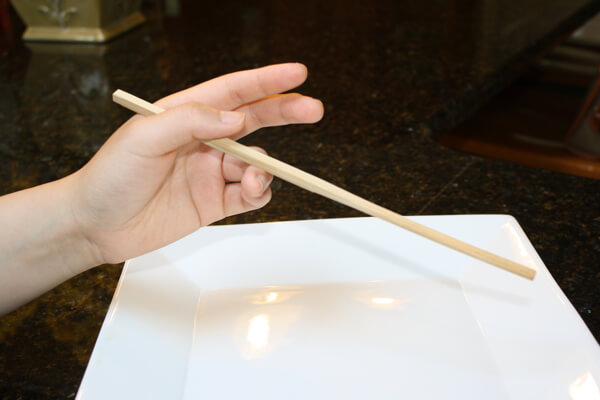
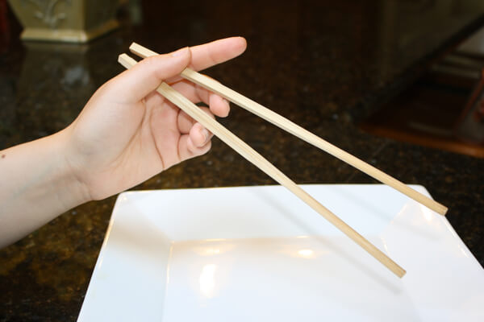
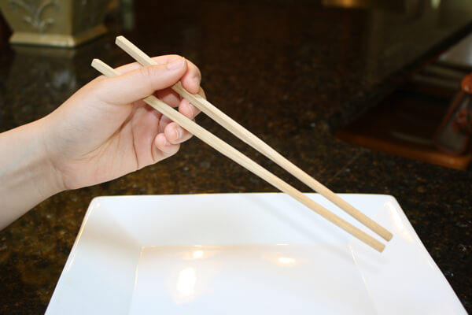
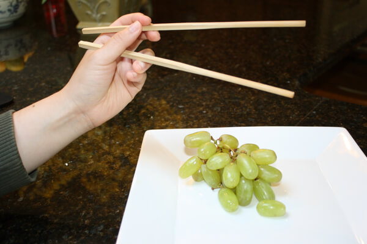
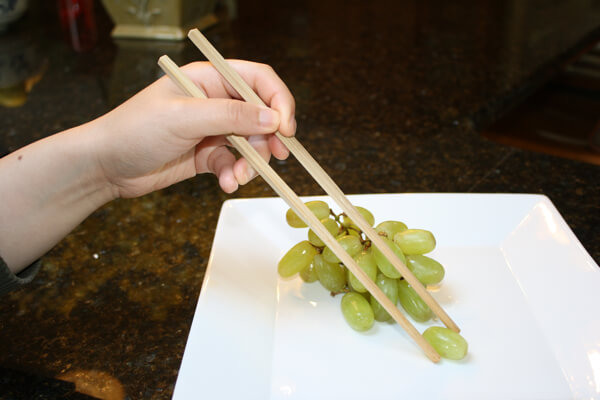

HOW TO USE CHOPSTICKS
-

Step 1: Hold your dominant hand loosely. Place the first chopstick in the valley between your pointer finger and thumb. Balance it on your ring finger.
-

Step 2: Place the second chopstick in the valley between your pointer finger and thumb along with the first chopstick, but rest this one on your middle finger instead of your ring finger.
-

Step 3: Use your thumb, pointer and middle fingers to grasp the second chopstick a bit more tightly.
-

Step 4: The first chopstick (on the bottom) remains more or less stationary. The index and middle fingers do all the heavy lifting with the second chopstick. Using your index and middle fingers to move the top chopstick up and down, open up your chopsticks.
-

Step 5: And close them over the food. Remember to keep your hand loose but still maintain good control over that chopstick.